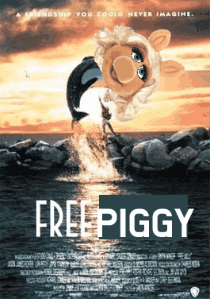
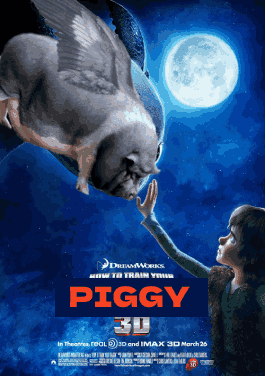
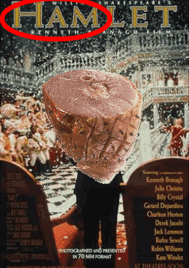
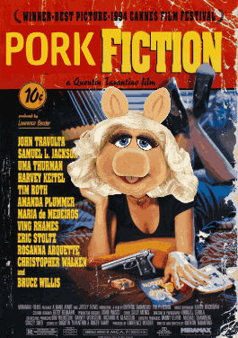

look at these pig related moves
Free piggy
synopsis
"Free Piggy" is a film about a captive pig named Miss Miggy who longs for freedom. With the help of a young boy, she takes on those who seek to keep her captive and fights for her right to live life on her own terms.
rateing
7/5
How to train your piggy
synopsis
In "How to Train Your Piggy," a farmer's obsession with the pigs he cares for leads him down a path of isolation, madness, and depravity. He views the pigs as superior to humans and becomes increasingly violent towards anyone who opposes him. As his mental state deteriorates, the pigs become mere pawns in his twisted game of power. This harrowing story explores the darkest depths of human nature and the consequences of unchecked obsession.
rateing
4/5
HAMlet
synopsis
In "HAMlet," a pig's son becomes obsessed with avenging his father's death, spiraling into madness. With a piggy twist on Shakespeare's classic, the play explores power, revenge, and morality. "HAMlet" is a witty and entertaining tale that will leave audiences both amused and moved.
rateing
420/69
Pork Fiction
synopsis
In "Pork Fiction," a team of crime-fighting pigs must navigate the seedy underworld of their city to solve a series of gruesome crimes. As they uncover a complex web of corruption, betrayal, and danger, the pigs must rely on their wit and teamwork to survive. With a clever script full of piggy puns and thrilling action sequences, "Pork Fiction" is a unique and entertaining movie that is sure to leave audiences oinking for more.
rateing
NAN/5